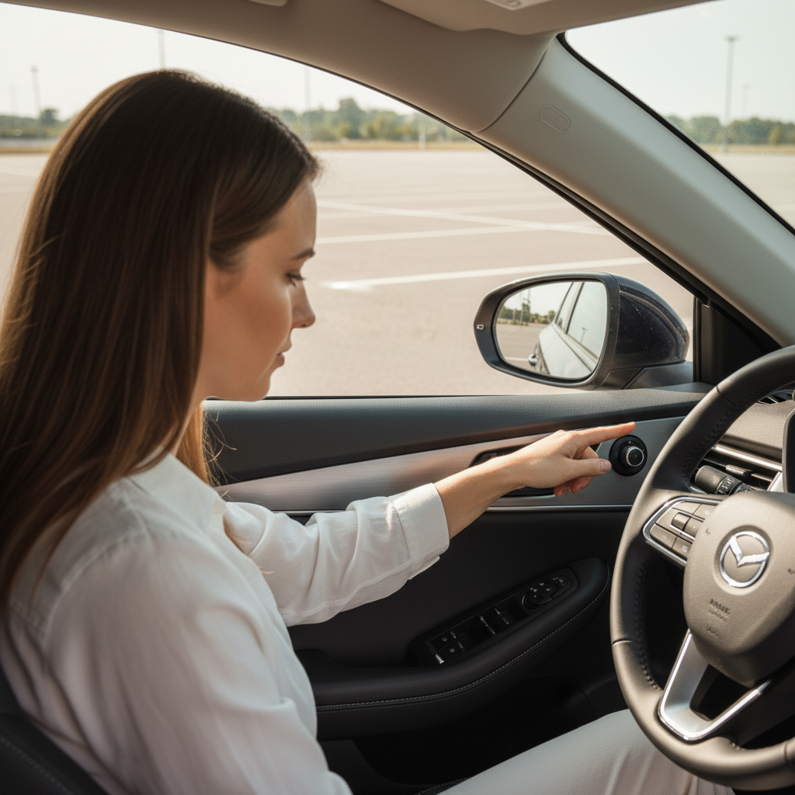
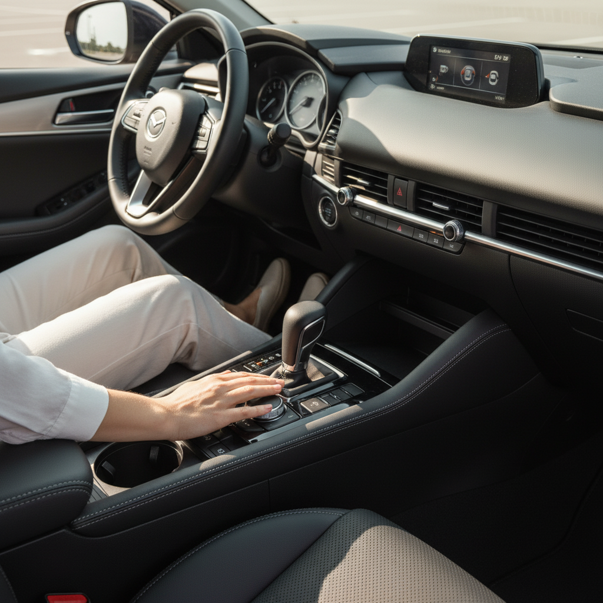
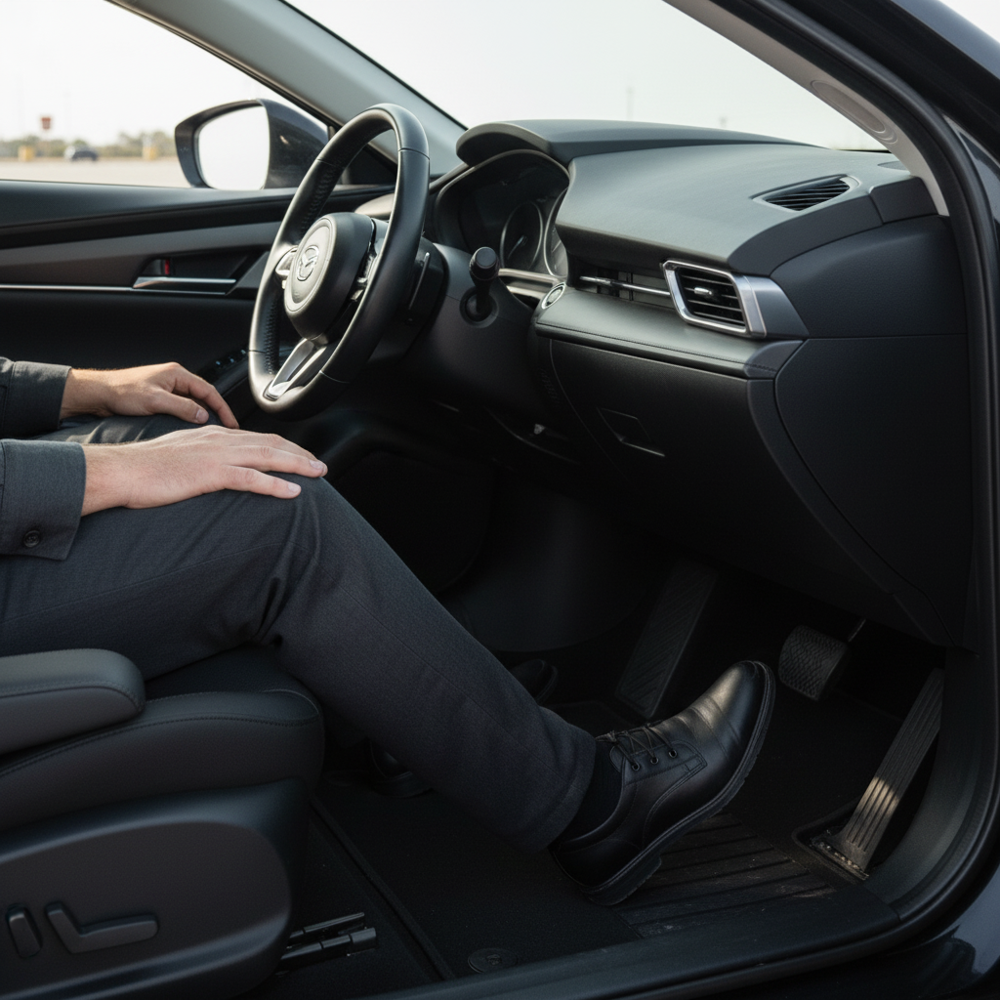
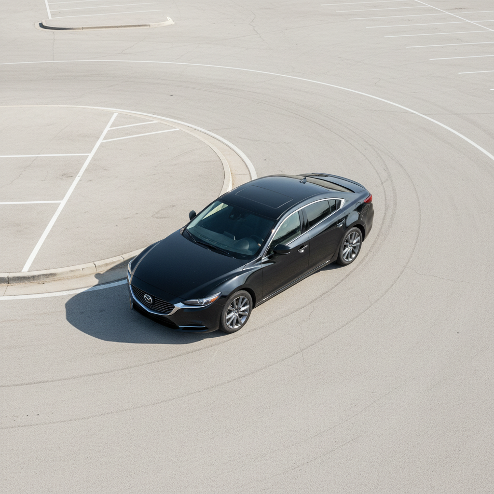
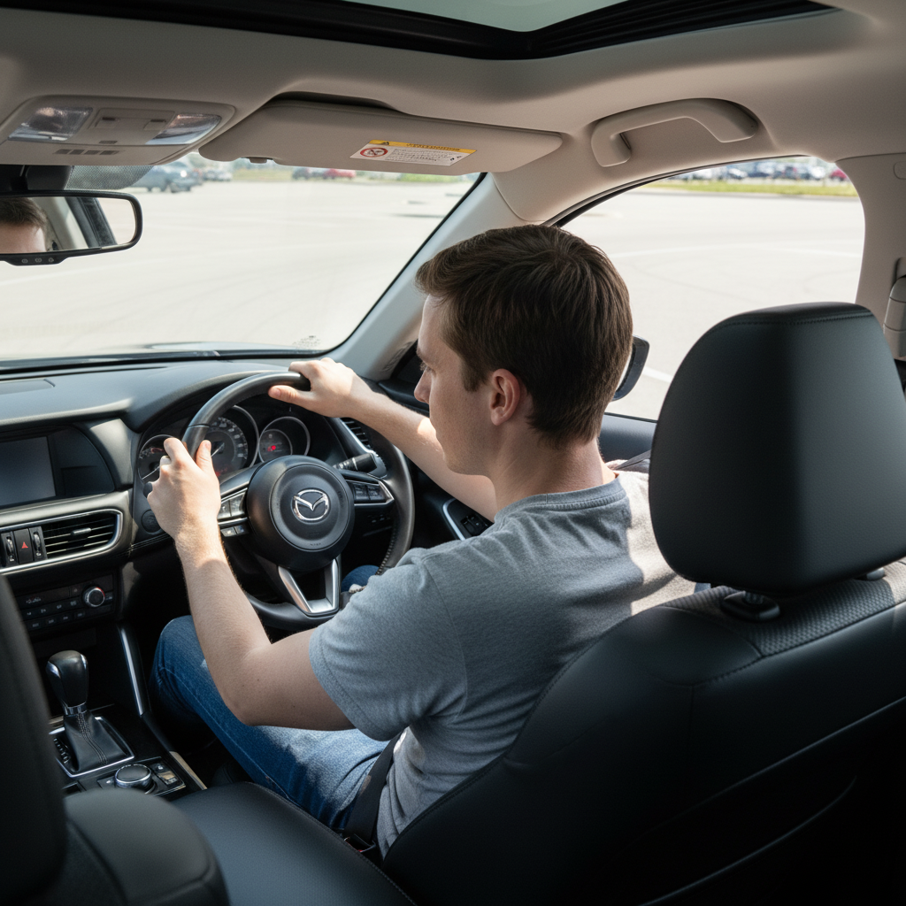
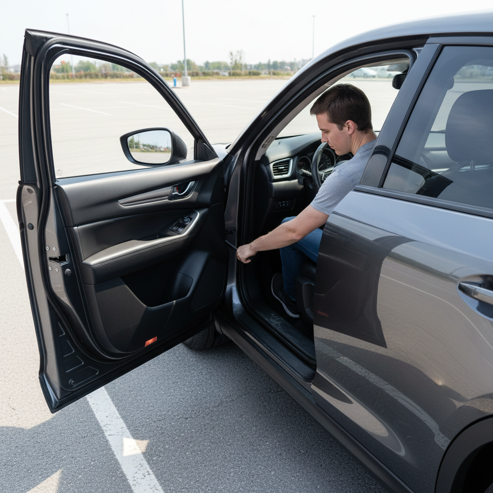

How to Drive a Car for the First Time (Automatic Transmission)
A step-by-step beginner's guide to the absolute basics of operating a car, from adjusting your seat to making your first slow, controlled movements in a safe environment.
⏱️ Total Time: 1 - 2 hours📊 Difficulty: Easy
🔧 Tools & Materials Required:
A car with an automatic transmission
A valid learner's permit or driver's license (as required by law)
A licensed, experienced driver to supervise
A large, empty, and private parking lot or similar open space
Comfortable, closed-toe shoes
Sunglasses (optional, for sunny days)
⚠️ Safety Notes:
Always drive with a licensed instructor or experienced driver.
Only practice in a safe, controlled environment away from other cars and pedestrians.
Eliminate distractions: put your phone away and turn off the radio.
Always wear your seatbelt.
Never drive under the influence of alcohol or drugs, or when you are overly tired.
1
Pre-Drive Cockpit Familiarization
⏱️ Estimated time: 10 minutes
Before starting the car, sit in the driver's seat and familiarize yourself with the primary controls. Identify the steering wheel, the two pedals on the floor (the wider one on the left is the brake, the narrower one on the right is the accelerator/gas), the gear selector (usually labeled P, R, N, D), the parking brake (either a lever between the seats or a small pedal to the far left), and the ignition (either a key slot or a push-to-start button). Locate the controls for headlights, turn signals, and windshield wipers.
🎧 Listen to instructions:
💡 Tips:
Do this with the engine completely off to safely learn the layout without any risk of accidental movement.
Press the brake and accelerator pedals with your right foot to feel the difference in their resistance.
⚠️ Warnings:
Never use your left foot for the pedals in an automatic car. Your right foot will control both the brake and the accelerator.
🔧 Tools needed for this step:
Car with automatic transmission
2
Adjusting Your Seat and Mirrors
⏱️ Estimated time: 5 minutes
Adjust your seat so you can press the brake pedal fully to the floor without stretching your leg. You should have a slight bend in your knee. Adjust the steering wheel so your wrists rest on top of it when you extend your arms. Next, adjust your rearview mirror to see the entire rear window. Then, adjust your left and right side-view mirrors so you can just barely see the side of your own car in the inner edge of each mirror. This minimizes blind spots.

🎧 Listen to instructions:
💡 Tips:
Proper posture is key. Sit up straight with your back firmly against the seat.
Take your time with the mirrors. They are your most important tool for situational awareness.
⚠️ Warnings:
Always make these adjustments before you start the engine.
3
Starting the Engine and Engaging Drive
⏱️ Estimated time: 5 minutes
Press your right foot firmly down on the brake pedal. With your foot on the brake, either turn the key in the ignition or press the 'Start' button until the engine turns on. Continue keeping your foot on the brake. Now, press the button on the gear selector and move it from 'P' (Park) down to 'D' (Drive). You may feel a very slight shudder as the gear engages. Finally, release the parking brake.

🎧 Listen to instructions:
💡 Tips:
Most modern cars will not start unless the brake pedal is depressed.
Listen to the sound of the engine. It will idle at a low, steady hum.
⚠️ Warnings:
The car will begin to move forward slowly ('creep') on its own once you shift into Drive and release the brake. Always keep your foot on the brake until you are ready to move.
4
Moving Forward and Gentle Acceleration
⏱️ Estimated time: 15 minutes
Look forward and check your surroundings to ensure your path is clear. Very slowly and gradually, lift your foot off the brake pedal. The car will begin to creep forward at about 3-5 mph without any gas. Let it do this for a few feet. To go faster, pivot your right foot from the brake to the accelerator and apply extremely light, gentle pressure. Imagine there is an egg under your foot that you don't want to break. A small amount of pressure is all you need.
🎧 Listen to instructions:
💡 Tips:
Practice just letting the car creep forward and then re-applying the brake to get a feel for its movement.
Keep your eyes looking far ahead in the direction you want to go, not down at the hood of the car.
5
Smooth Braking
⏱️ Estimated time: 15 minutes
To slow down or stop, lift your foot completely off the accelerator and place it on the brake pedal. Apply gentle, steady pressure. The earlier you begin braking, the less pressure you'll need and the smoother your stop will be. Aim to bring the car to a stop without any sudden jerking motion. Practice stopping at a specific line on the pavement.

🎧 Listen to instructions:
💡 Tips:
Feel how the car's momentum shifts forward as you brake. The goal is to manage that shift smoothly.
For a perfect stop, slightly ease up on the brake pressure just before the car comes to a complete halt to avoid a final 'jerk'.
⚠️ Warnings:
In an emergency, you will need to press the brake firmly and quickly. But for normal driving, smoothness is key.
6
Steering and Making Turns
⏱️ Estimated time: 20 minutes
Hold the steering wheel with both hands at the '9 and 3 o'clock' positions. To make a gentle turn, use the 'push-pull' method: if turning right, push the wheel up with your left hand and pull it down with your right hand, letting it slide through your grip. Keep the car moving at a slow, steady speed (5-7 mph). The car will go where your eyes are looking, so look through the turn to your intended path.

🎧 Listen to instructions:
💡 Tips:
Don't make sharp, jerky movements with the wheel. Small, smooth inputs are all that's needed.
After a turn, the steering wheel will want to straighten itself out. Let it slide back through your hands, controlling its speed.
7
Driving in Reverse
⏱️ Estimated time: 10 minutes
Come to a complete stop. With your foot on the brake, shift the car into 'R' (Reverse). Turn your body to the right, placing your right arm on the back of the passenger seat. Look directly out the rear window. Place your left hand at the top (12 o'clock) of the steering wheel. Control your speed by easing off the brake; you will likely not need the accelerator. Steer in the direction you want the *back* of the car to go. Turning the wheel right makes the back of the car go right.

🎧 Listen to instructions:
💡 Tips:
Reversing is almost always done at a very slow speed, controlled only by the brake pedal.
Use your mirrors and backup camera (if available), but always prioritize looking over your shoulder for the best view.
⚠️ Warnings:
This can feel counter-intuitive at first. Take it very slowly.
8
Parking and Securing the Vehicle
⏱️ Estimated time: 5 minutes
Once you have finished practicing, find an empty parking spot and slowly pull in, coming to a complete stop. With your foot still on the brake, shift the gear selector back to 'P' (Park). Next, firmly engage the parking brake. Now it is safe to turn off the engine by turning the key or pressing the 'Stop' button. The lesson is complete.

🎧 Listen to instructions:
💡 Tips:
Always follow this sequence: Stop -> Shift to Park -> Engage Parking Brake -> Turn off Engine.
Double-check that you have turned off your headlights and removed the key before exiting the vehicle.